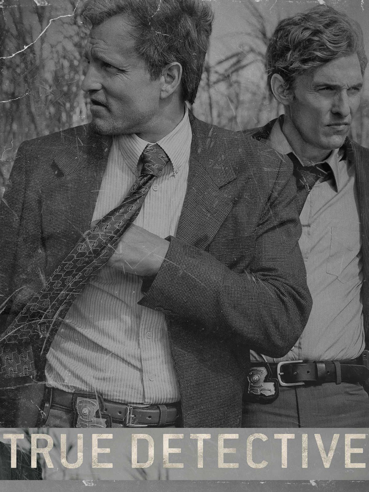

"Karanlık, sırlarla dolu bir yolculuk..."
Louisiana'da geçen bir suç dramı. Rust Cohle ve Marty Hart, karmaşık bir cinayet davasını çözmeye çalışırken kendi karanlık geçmişleriyle yüzleşirler.
Zeki, gizemli ve felsefi dedektif.
Ailesine bağlı, ama hatalar yapan dedektif.
Marty'nin eşi, olayların içinde önemli bir figür.
1. sezonun final sahnesi: Rust ve Marty'nin yıldızları izlediği sahne.
Dedektifler, eski bir cinayet davasını tekrar inceliyor.
Rust ve Marty, ipuçlarını takip ederken kişisel sorunlarıyla da yüzleşiyor.
Cinayet davası derinleşirken, karanlık sırlar gün yüzüne çıkıyor.
Rust, gizli bir göreve girerken Marty ailevi sorunlarla boğuşuyor.
Dedektifler, kritik bir dönüm noktasına ulaşıyor.